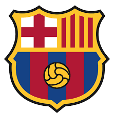
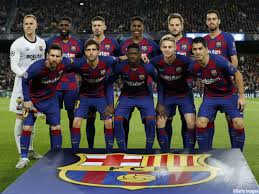
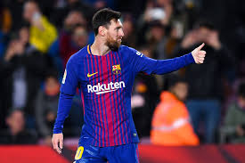
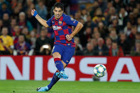
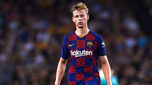

FC Barcelona


| 監督 |
キケ・セティエン |
| キャプテン |
リオネル・メッシ |
| CL優勝回数 |
５回 |
My favorite player

リオネル・アンドレス・メッシ・クッシッティーニ（Lionel Andrés Messi Cuccittini [ljoˈnel anˈdɾes13歳でFCバルセロナに加入し、17歳でトップチームデビューして以降、10度のリーガ・エスパニョーラ優勝、6度のコパ・デル・レイ、4度のUEFAチャンピオンズリーグを含むバルセロナ歴代最多33回の優勝に貢献。自身も歴代最多6回のバロンドールを受賞し[注 2]、6回のチャンピオンズリーグ得点王と歴代最多6回のゴールデンシュー(欧州得点王)を獲得している。同クラブの歴代通算最多得点（603ゴール)の記録を保持しておりラ・リーガ(419ゴール)、ラ・リーガとヨーロッパのリーグの1シーズン(50)、クラシコ(26ゴール)の歴代最多ゴール記録ならびにチャンピオンズリーグ歴代最多ハットトリック記録(8)、ラ・リーガ(169)、コパ・アメリカ(12)の歴代最多アシスト記録を保持している。また多くのサッカー関係者、選手にサッカー史上最高の選手と呼ばれている

ルイス・アルベルト・スアレス・ディアス（Luis Alberto Suárez Diaz、 1987年1月24日 - ）は、ウルグアイ・サルト出身のサッカー選手。ポジションはFW。リーガ・エスパニョーラ・FCバルセロナ所属。ウルグアイ代表。
エールディヴィジ、プレミアリーグ、リーガ・エスパニョーラと3つのリーグで得点王を獲得し、ウルグアイ代表の通算得点記録を持つストライカー。クラブ、代表、個人で数々のタイトルを獲得。エディンソン・カバーニとの2トップはウルグアイ代表が誇る強力な2トップとして知られる。一方で、後述のようにピッチ内外での行動に問題の多い選手でもある

フレンキー・デ・ヨング（Frenkie de Jong，1997年5月12日 - ）は、オランダ・南ホラント州アルケル出身のサッカー選手。リーガ・エスパニョーラ・FCバルセロナ所属。オランダ代表。ポジションはミッドフィールダー。2019年1月23日、2019年7月1日にFCバルセロナに加入することが発表された。契約期間は5年間で、移籍金は7500万ユーロ、1100万ユーロのボーナス込みで最大8600万ユーロ[10][11]。その内ヴィレムIIに600万ユーロ超、RKCに約400万ユーロが分配されることが決まった[12][13]。エールディヴィジの選手としては史上最高額、オランダ人選手としては同じくヴィレムIIユース出身でヴィレムIIのトップチームでのプレー経験が無いファン・ダイクに続く史上2番目の高額移籍となる。9月14日のバレンシアCF戦で初得点を記録。